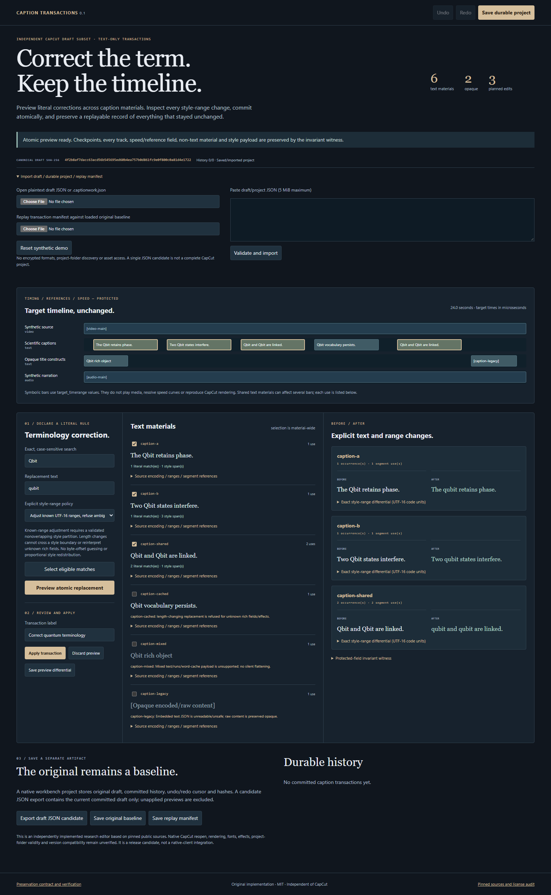

Caption Transactions · A separate caption-data editor with a Windows app and browser version
Correct a subtitle without losing track of the rest of the edit.
Changing a word in a video subtitle can affect more than its spelling. This editor shows the text and formatting changes together, checks the supported timing and media data, and keeps a record you can undo.
Why you might use it
Imagine standardizing a term across a video. A longer replacement word can shift which letters are bold, and the same saved caption text may be used in more than one place. A search-and-replace result alone does not show all those consequences.
A concrete example. The built-in example replaces 'Qbit' with 'qubit'. That adds a letter. The preview shows how the bold-text boundary moves and lists every caption use affected by the replacement. Unsupported formatting makes the edit stop for review rather than guessing how to move it.
1. Load a draft
Start with the made-up example, or explore a copy of a supported draft-data file.
2. Review the correction
Enter the old and new wording. Inspect every affected caption and formatting change before applying the group of edits.
3. Keep a way back
Save the edited file and the history. Undo the change or repeat the saved edits only against the matching starting data.
What this page shows. The live editor uses invented captions. Its timeline bars show recorded timing; they do not play video or reproduce CapCut's preview.
Where it runs and what is still untested. This is an independent editor for a limited set of CapCut-style JSON draft data, not a new button inside CapCut. Reopening its output in CapCut and rendering the video have not been verified. A single saved JSON file is not a complete video project.

BEFORE
A word edit hides its consequences.
Replacing Qbit with qubit adds one UTF-16 unit. One material is reused by two segments; one word has its own bold style span. A current draft alone does not explain either consequence.
Official CapCut editing and existing draft tools already support text changes. Simple replacement is existing capability, not the novelty claimed here.
AFTER
One reviewed, replayable transaction.
The preview exposes three changed materials and four affected uses. A bold span shifts from [4,8] to [4,9], while the following span moves from [8,26] to [9,27]. Protected track, reference, speed, media and unknown-field values are compared before commit.
A durable project retains the original baseline, labeled history, exact differentials, undo cursor and redo future. A manifest refuses a different baseline instead of silently retargeting.
PRESERVATION CONTRACT
What is checked, what remains unknown.
Known plain-text/style partitions support explicit endpoint mapping. Equal-offset policy requires equal UTF-16 lengths. Mixed rich objects, style-boundary-crossing replacements, surrogate splits, doubled ranges and malformed encoded content are refused or retained opaque.
Unknown JSON values are preserved. That preservation does not prove semantic validity in CapCut. The candidate is a single JSON file, not a complete project folder; fonts, effects, media rendering and compatibility with a native build remain untested.
Whole-file bytes are not preserved: canonical hashes ignore outer key order, edited embedded JSON is reserialized, and unselected embedded strings remain exact. An attacker can rebuild a self-consistent record, so retain an independent trusted checkpoint when provenance matters.
Run the experiment.
- Open the workbench; keep Qbit → qubit.
- Preview; inspect each before/after and style differential.
- Apply; save a durable project.
- Undo, save, reload and redo.
- Export a separate candidate, baseline and replay manifest.
The Windows build runs the same renderer in an isolated Electron host. The offline web archive also runs directly from app.html.